건축기사 (2007-09-02 기출문제)
1과목: 건축계획
1. 공동주택의 세대별 주호의 생활공간계획에 대한 설명 중 옳지 않은 것은?
- 단위 평면의 깉이는 채광에 지장이 없는 한 가급적 깊게 함으로써 외측면을 줄이는 것이 에너지 절약에 유리하다.
- 욕실, 화장실, 부엌 등의 배관설비는 한 곳으로 집중 시키는 것이 유지관리에 용이하다.
- 규모가 작으며 면적을 절약하기 위해 거실, 침실, 식당 및 부엌은 분리하여 독립시키도록 한다.
- 부엌은 유틸리티룸 및 식당과 직접 연결시키도록 한다.
(정답률: 82%)

2. 은행건축의 배치계획에 대한 설명 중 옳지 않은 것은?(오류 신고가 접수된 문제입니다. 반드시 정답과 해설을 확인하시기 바랍니다.)
- 아이들이 많은 지역에서는 주출입구를 회전문으로 하지 않는 것이 좋다.
- 야간금고는 가능한 한 주출입구 근처에 위치하도록 하며 조명시설이 왼비되도록 한다.
- 고객이 지나는 동선은 되도록 짧게 한다.
- 경비 및 관리의 능률상 은행 내 출입은 주출입구 하나로 집약시키고 별도의 출입구는 설치하지 않는다.
(정답률: 64%)
3. 다음의 은행건축에 관한 설명 중 틀린 것은?
- 드라이브 인 뱅크의 창구는 운전석 쪽으로 한다.
- 고객실에서 영업 카운터의 높이는 100~110cm 정도로 하는 것이 좋다.
- 영업 카운터의 폭은 60~75cm 정도로 한다.
- 주출입구는 도난방지상 안여닫이로 하지 않으며, 밖여닫이나 자재문으로 하는 것이 바람직하다.
(정답률: 71%)
4. 아파트의 평면형에 대한 설명 중 옳지 않은 것은?
- 홀형은 통행부이 면적이 많이 소요되나 동선이 길어 출입하는데 불편하다.
- 집중형은 기후조건에 따라 기계적 환경조절이 필요한 형이다.
- 중복도형은 프라이버시가 좋지 않다.
- 편복도형은 복도가 개방형이므로 각호의 통풍 및 채광상 양호하다.
(정답률: 69%)
5. 다음 중 주거공간계획의 결정요소와 가장 관계가 먼 것은?
- 미래의 주거생활 패턴 추구
- 신체적인 욕구
- 전통성 재현
- 사용자의 경제성 고려
(정답률: 71%)
6. 현존하는 우리나라 목조건축물 중 가장 오래된 것은?
- 부석사 무량수전
- 봉정사 극락전
- 법주사 팔상전
- 화엄사 보광대전
(정답률: 69%)
7. 미술관 전시실의 순회형식에 관한 설명 중 옳지 않은 것은?
- 연속순로 형식은 각 전시실 연속적으로 동선을 형성하고 있으며 비교적 소규모 전시에 적합하다.
- 갤러리(gallery)형식은 각 실에 직접 들어갈 수가 있는 점이 유리하며, 필요시에는 자유로이 독립적으로 폐쇄할 수 있다.
- 중앙홀 형식은 중앙홀이 크면 동선의 혼란은 없으나 장래의 확장에 많은 무리를 가지고 있다.
- 프랭크 로이드 라이트의 구겐하임 미술관은 연속순로 형식이다.
(정답률: 70%)
8. 다음 중 도서관에서 20만권을 수장할 서고의 면적으로 가장 알맞은 것은?
- 300m2
- 500m2
- 700m2
- 1000m2
(정답률: 81%)
9. 학교의 운영방식에 관한 설명 중 옳지 않은 것은?
- 교과교실형(V형)은 학생의 이동율이 심한 것이 단점이다.
- 플라툰형(P형)은 교사의 수와 적당한 시설이 없으면 실시가 곤란하다.
- 달톤형(D형)은 우리나라에서는 입시학원이나 사설 외국어 학원에서 사용하고 있다.
- 종합교실형(A형)은 초등학교 고학년에 가장 적합하다.
(정답률: 81%)
10. 다음 중 백화점의 모듈결정요인과 가장 거리가 먼 것은?
- 지하주차장의 주차방식과 주차폭
- 에스컬레이터의 유무
- 매장 진열장의 배치와 치수
- 화장실의 크기
(정답률: 71%)
11. 병원의 간호사 대기소에 관한 설명 중 ( )안에 가장 알맞은 내용은?
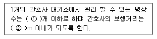
- ① 10~20, ② 40
- ① 20~30, ② 40
- ① 30~40, ② 24
- ① 40~50, ② 24
(정답률: 75%)
12. 쇼핑센터의 공간구성에서 페디스트리언 지대(Pedestrin area)의 일부로서 고객을 각 상점에 유도하는 주요 보행자 동성인 동시에 고객의 휴식처로서 기능을 갖고 있는 곳은?
- 몰(Mall)
- 코트(Court)
- 핵상점(Magnet Store)
- 허브(hub)
(정답률: 69%)
13. 학교건축의 배치계획 중 분산병렬형에 대한 설명으로 옳지 않은 것은?
- 일종의 핑거 플랜이다.
- 일조ㆍ통풍 등 교실의 환경 조건이 불균등하다.
- 구조계획이 간단하고 규격형의 이용도 편리하다.
- 상당히 넓은 부지를 필요로 하다.
(정답률: 72%)
14. 단독주택계획에 대한 설명 중 옳지 않은 것은?
- 건물은 가능한 한 동서로 긴 형태가 좋다.
- 동지때 최소한 4시간 이상의 햇빛이 들어와야 한다.
- 인접 대지에 기존 건물이 없더라도 개발 가능성을 고려하도록 한다.
- 건물이 대지의 남측에 배치되도록 한다.
(정답률: 70%)
15. 도서관의 출납시스템 중 폐가식에 대한 설명으로 틀린 것은?
- 서고의 열람실이 분리되어 있다.
- 규모가 큰 도서관의 독립된 서고의 경우에 많이 채용된다.
- 도서의 유지 관리가 좋아 책의 망실이 적다.
- 대출절차가 간단하여 관원의 작업량이 적다.
(정답률: 90%)
16. 다음 중 CIAM과 가장 밀접한 관계가 있는 것은?
- 아테네 헌장
- 브루탈리즘
- 로버트 벤추리
- 메탈볼리즘
(정답률: 30%)
17. 공장 건축의 레이아웃 계획에 관한 설명 중 옳지 않은 것은?
- 다품종 소량생산이나 주문생산 위주의 공장에는 공정중심의 레이아웃이 적합하다.
- 레이아웃 계획은 작업장 내의 기계설비 배치에 관한 것으로 공장규모변화에 따른 융통성은 고려 대상이 아니다.
- 고정식 레이아웃은 조선소와 같이 제품이 크고 수량이 적을 경우에 적용된다.
- 플랜트 레이아웃은 공장건축의 기본설계와 병행하여 이루어진다.
(정답률: 69%)
18. 우리나라의 현대건축가 김수근의 작품이 아닌 것은?
- 삼일로빌딩
- 자유센터
- 경동교회
- 타워호텔
(정답률: 33%)
19. 극장 객석의 음향계획에 대한 설명 중 옳은 것은?
- 객석 내 소음은 40~50dB 이하로 한다.
- 영사실 천장에는 반드시 방음재를 사용한다.
- 발코니의 길이는 객석 길이의 최대 1/2 이내로 한다.
- 객석부 공간의 앞면 경사천장은 객석 뒤쪽에 도달하는 음을 보강하도록 계획한다.
(정답률: 59%)
20. 미술관의 전시장 계획에 관한 설명 중 옳은 것은?
- 조명의 광원은 감추고 눈부심이 생기지 않는 방법으로 투사한다.
- 인공조명을 주로 하고 자연채광은 고려하지 않는다.
- 광원의 위치는 수직벽면에 대하 10~25°의 범위내에서 상향조정이 좋다.
- 회화를 감상하는 시점의 위치는 화면 대각선의 2배 거리가 가장 이상적이다.
(정답률: 50%)
2과목: 건축시공
21. 입찰에 관한 설명 중 옳은 것은?
- 일반공개입찰은 입찰자가 많으므로 담합의 우려가 많다.
- 지명공개입찰은 입찰자가 한정되므로 부적격자에게 낙찰될 우려가 많다.
- 특명입찰은 수의계약이라고도 하며 공사비가 증가될 우려가 있다.
- 현장설명은 보통 응찰과 동시에 이루어진다.
(정답률: 64%)
22. 철골공사에 관한 설명 중 틀린 것은?
- 리벳치기에서 리벳은 900~1000℃로 가열한 것을 사용하고, 600℃ 이하로 냉각된 것은 사용할 수 없다.
- 녹막이도장은 작업장소의 온도가 5℃ 이하, 또는 상대습도가 80% 이상일 때는 작업을 중지한다.
- 철골이 콘크리트에 묻히는 부분은 특히 녹막이 칠을 잘해야 한다.
- 볼트 접합은 일반적으로 처마높이 9m 이하이고 스팬이 13m 이하의 건축물에서 사용한다.
(정답률: 61%)
23. 다음 중 숏크리트(Shotcrete)와 가장 관계가 없는 것은?
- 건나이트
- 본닥터
- 제트크리트
- 그라우팅
(정답률: 64%)
24. 표준관입시험에 관한 내용 중 옳지 않은 것은?
- 추의 무게는 63.5kg 이다.
- 지반의 단단한 정도와 다져짐 정도 등을 판정하기 위한 토질시험의 일종이다.
- 추의 낙하 높이는 130cm 이다.
- N의 값이 클수록 지내력이 큰 지반이다.
(정답률: 72%)
25. 돌 다듬기 종류를 시공순서와 같게 나열한 것은?
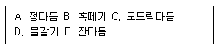
- A-B-C-D-E
- B-A-C-E-D
- B-C-A-E-D
- C-B-A-E-D
(정답률: 42%)
26. 수지의 종류 중 열경화성 수지에 속하지 않는 것은?
- 페놀수지
- 요소수지
- 멜라민수지
- 폴리에틸렌수지
(정답률: 60%)
27. 프리스트레스트 콘크리트(Prestressed Concrete)에 대한 설명 중 옳지 않은 것은?
- 프레텐션(Pre-tension)법은 강재에 인장력을 준 후에 콘크리트를 타설하는 방법이다.
- 구조물을 자중을 경감할 수 있으며, 부재단면을 줄일수 있다.
- 화재에 강하며, 내화피복이 필요하지 않다.
- 항복점 이상에서 진동, 충격에 약하다.
(정답률: 65%)
28. 타일공사에 관한 설명 중 옳은 것은?
- 모자이크 타일의 줄눈너비의 표준은 5mm 이다.
- 벽체타일이 시공되는 경우 바닥타일은 벽체타일을 붙이기 전에 시공한다.
- 타일을 붙이는 모르타르에 시멘트 가루를 뿌리면 백화가 방지된다.
- 바탕 모르타르를 바른 후 타일을 붙일 때까지는 여름철(외기온도 25℃ 이상)은 3~4일 이상의 기간을 두어야 한다.
(정답률: 37%)
29. 콘크리트용 굵은 골재의 최대치수가 25mm인 골재는 다음 중 어느 것인가?
- 25mm 체를 99% 통과하고 20mm 체를 95% 통과한 골재
- 25mm 체를 95% 통과하고 20mm 체를 91% 통과한 골재
- 25mm 체를 91% 통과하고 20mm 체를 84% 통과한 골재
- 25mm 체를 85% 통과하고 20mm 체를 75% 통과한 골재
(정답률: 33%)
30. 시멘트의 각종 시험방법과 기구가 서로 옳게 묶어진 것은?
- 비중시험-길모아침 장치
- 강열감량시험-비카트침 장치
- 응결시험-로스엔젤레스 시험기
- 분말도-공기 투과 장치
(정답률: 33%)
31. 벽두께 1.0B, 벽면적 30m2 쌓기에 소요되는 벽돌의 정미량은? (단, 표준형 벽돌을 사용한다.)
- 3900매
- 4095매
- 4470매
- 4604매
(정답률: 82%)
32. 매스 콘크리트(Mass Concrete)에 대한 설명으로 옳은 것은?
- 단위시멘트량을 늘려 콘크리트의 발열량을 줄이도록 하여야 한다.
- 굵은 골재의 최대치수를 작게 하고, 입자의 크기가 균등한 골재를 사용하는 것이 좋다.
- 매스 콘크리트의 타설온도는 온도균열을 제어하기 위한 관점에서 될 수 있는 대로 낮게 하여야 한다.
- 매스 콘크리트는 베이스 콘크리트에 유동화제를 첨가하여 유동성을 증가시킨 콘크리트이다.
(정답률: 30%)
33. 큰 부재가 많은 구조로 구성된 철골량 4250 ton의 녹막이칠의 면적으로 가장 적합한 것은?
- 106250m2
- 140250m2
- 85000m2
- 212500m2
(정답률: 13%)
34. 벽돌쌓기공사에 대한 설명 중 틀린 것은?
- 가로 및 세로줄눈이 너비는 도면 또는 공사시방서에 정한 바가 없을 때에는 20mm를 표준으로 한다.
- 벽돌쌓기는 도면 또는 공사시방서에서 정한 바가 없을 때에는 영식 쌓기 또는 화란식 쌓기로 한다.
- 세로줄눈의 모르타르는 벽돌 마구리면에 충분히 발라 쌓도록 한다.
- 하루의 쌓기 높이는 1.2m(18켜 정도)를 표준으로 하고, 최대 1.5m(22켜 정도) 이하로 한다.
(정답률: 68%)
35. 타일공사에서 시공 후 타일접착력 시험에 대한 설명 중 틀린 것은?
- 타일의 접착력 시험은 600m2당 한 장씩 시험한다.
- 시험할 타일은 먼저 줄눈부분을 콘크리트면까지 절단하여 주위의 타일과 분리시킨다.
- 시험은 타일 시공 후 4주 이상일 때 행한다.
- 시험결과의 판정은 접착강도가 10kN/m2 이상이어야 한다.
(정답률: 54%)
36. 터파기 공사시 중앙부분을 먼저 파내고, 기초를 축조한 다음, 버팀대로 지지하여 주변흙을 파내고, 지하구조물을 완성하는 터파기 공법명은?
- 오픈 컷(Open cut)공법
- 아일랜드 컷(Island cut)공법
- 트랜치 컷(Trench cut)공법
- 케이슨(Caisson)공법
(정답률: 57%)
37. 건축 공사비에 대한 설명 중 옳지 않은 것은?
- 공사비는 직접공사비와 간접공사비로 구성된다.
- 직접공사비의 구성은 인건비, 자재비, 장시사용료 등이 이에 해당된다.
- 공사속도를 빠르게 할수록 간접공사비는 감소한다.
- 공사속도는 늦을수록 직접공사비는 증가한다.
(정답률: 38%)
38. 다음은 네트워크(network)공정관리에서 활용되는 용어를 설명한 것 중 옳을 것은?
- DF(Dependent Float) : 후속 작업의 TF 에 영향을 주는 여유시간을 말한다.
- FF(Free Flot) : 가장 빠른 개시시각에 시작하여 가장 늦은 종료시각으로 완료할 때 생기는 여유시간이다.
- TF(Total Float) : 가장 빠른 개시시각에 시작하고 후속하는 작업도 가장 빠른 개시시각에 시작하여도 발생하는 여유시간을 말한다.
- SL(Slack) : 총 여유시간과 자유 여유시간과의 차이를 말한다.
(정답률: 20%)
39. 콘크리트의 골재분리를 줄이기 위한 방법으로 옳지 않은 것은?
- 중량골재와 경량골재 등 비중차가 큰 골재를 사용한다.
- 플라이애쉬 등의 포졸란을 적당량 혼화한다.
- 세장한 골재보다는 둥근골재를 사용한다.
- AE제나 AE감수제 등을 사용하여 사용수량을 감소시킨다.
(정답률: 46%)
40. 수직굴삭, 수중굴삭 등에 사용되는 깊은 흙파기용이며, 연약지반에 적당한 흙파기용 기계는?
- 백호
- 크램쉘
- 그레이드
- 드래그라인
(정답률: 48%)
3과목: 건축구조
41. 다음의 철근콘크리트보의 균형철근비에 대한 설명 중 ( )안에 들어갈 내용으로 가장 알맞은 것은?
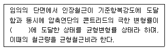
- 0.003
- 0.03
- 0.65
- 0.85
(정답률: 52%)
42. 독립기초가 모래지반 위에 놓여 있을 때 중심 압축력에 대한 지반 반력의 분포로서 합당한 것은?
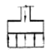
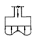
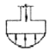
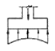
(정답률: 52%)
43. 곡면판이 지니는 역학적 특성을 응용한 구조로서 외력은 주로 판이 면내력으로 전달되기 때문에 경량이고 내력이 큰 구조물을 구성할 수 있는 것은?
- 트러스구조
- 커튼월구조
- 셸구조
- 패널구조
(정답률: 70%)
44. 철근콘크리트보의 처짐에 관한 기술 중 틀린 것은?
- 단순보의 높이가 l/16보다 큰 경우에는 처짐계산이 필요없다. (단, l은 보의 스팬)
- 처짐계산에 필요한 단면2차 모멘트 계산시 콘크리트부분은 전단면 적용시킨다.
- 지속하중에 의한 건조수축 및 크리프는 하중이 구조물에 처음 재하될 때 일어나는 처짐 외에 추가 처짐의 원인이 된다.
- 장기처짐은 재하기간, 압축철근의 양 등에 의하여 영향을 받는다.
(정답률: 25%)
45. 고정하중에 의한 모멘트 100kNㆍm, 적재하중에 의한 모멘트 80kNㆍm가 작용하는 단근장방형보에서 극한강도설계법에 의거하였을 때 소요 인장철근으로 가장 적당한 것은?
- 4-D22
- 5-D22
- 6-D22
- 7-D22
(정답률: 32%)
46. 그림과 같이 힘 P가 작용할 때 휨모멘트가 0이 되는 곳은 모두 몇 개인가?
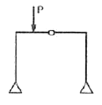
- 2
- 3
- 4
- 5
(정답률: 44%)
47. 철골조 플레이트보(plate girder)의 구성부재에 해당되지 않는 것은?
- 윙 플레이트
- 커버 플레이트
- 플랜지 플레이트
- 스티프너
(정답률: 20%)
48. 철근콘크리트 단순보에서 휨모멘트에 관한 설명 중 옳지 않은 것은?
- 등분포하중이 작용할 때 휨모멘트선은 포물선이다.
- 집중하중이 작용할 때 휨모멘트선은 경사직선이다.
- 등변분포하중이 작용할 때 휨모멘트선은 2차곡선이다.
- 휨모멘트의 극대 및 극소는 전단력이 0인 단면에서 생긴다.
(정답률: 38%)
49. 단면 2차 단면 2차반경을 구하기 위한 좌굴축은?
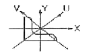
- V축
- Y축
- U축
- X축
(정답률: 25%)
50. 강도설계법에서 D19 압축철근의 기본정착길이는?
- 674mm
- 570mm
- 482mm
- 415mm
(정답률: 25%)
51. 직사각형 단면의 철근콘크리트보에 발생하는 최대 전단응력도는? (단, 보의 단면적은 3000m2, 최대 전단력은 2000N 이다.)
- 1MPa
- 1.5MPa
- 10MPa
- 15MPa
(정답률: 40%)
52. 다음의 고력볼트접합에 대한 설명 중 옳지 않은 것은?
- 접합부의 강성이 높아 수직방향 접합부의 변형이 거의 없다.
- 접합판재 유효단면에서 하중이 적게 전달된다.
- 볼트의 단위 강도가 높아 큰 응력을 받는 접합부에 적당하다.
- 마찰접합이므로 볼트나 판재에 전단 또는 지압응력이 발생한다.
(정답률: 37%)
53. 그림과 같은 구조물에서 EB부재의 전단력의 크기는?
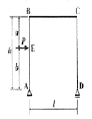
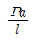
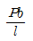
- P
- 0
(정답률: 42%)
54. 직경 25mm, 길이 6m인 강봉과 직경 28mm, 길이 3m인 강봉을 용접하여 만든 길이 9m인 가새의 양 끝에 100kN의 인장력이 작용할 때 가새의 늘어난 길이는? (단, 강봉의 Es=20000MPa)
- 5.70mm
- 7.60mm
- 8.55mm
- 11.40mm
(정답률: 21%)
55. 그림과 같이 양단 고정인 철공보에 등분포 하중이 작용할 때 소요되는 단면계수 값은? (단, SS400 강재사용, fb=160MPa, 좌굴이 없는 것으로 가정한다.)
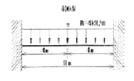
- 390cm2
- 410cm2
- 500cm2
- 570cm2
(정답률: 13%)
56. 그림에서 보이는 라멘에서 BC 부재에 작용하는 전단력 크기는 얼마인가?
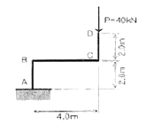
- 40√2kN
- 20√2kN
- 20kN
- 40kN
(정답률: 26%)
57. 철근콘크리트 단근보의 폭 b=300mm, 유효춤 d=500mm, 인장철근의 단면적이 3000mm2일 때, 설계휨강도는? (단, fck=21MPa, fy=300MPa, 강도감소계수(∅)=0.9이다.)
- 156.93 kNㆍm
- 216.93 kNㆍm
- 266.93 kNㆍm
- 336.93 kNㆍm
(정답률: 25%)
58. 다음 중 강구조에서 전단 연결재(Shear Connector)가 사용되는 부분은?
- 기둥과 보의 접합부
- 기둥의 이음부
- 합성보와 슬래브 사이
- 판보의 플랜지와 웨브의 접합
(정답률: 17%)
59. 길이가 l인 캔틸레버 보의 자유단에 집중하중 P가 작용할 때 자유단의 처짐각 ⍬와 처진 δ를 바르게 기술한 것은? (단, 탄성계수는 E, 단면2차모멘트는 I이다.)
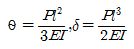
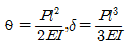
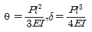
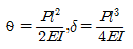
(정답률: 28%)
60. 다음 중 내진설계에 있어서 밑면 전단력 산정과 가장 관계가 먼 것은?
- 건물의중요도계수
- 진도계수
- 반응수정계수
- 유효건물중량
(정답률: 23%)
4과목: 건축설비
61. 특별고압계기용 변성기의 2차측 전로 및 고압용 또는 특별고압용 기계 기구의 철대 및 금속제 외함에 필요한 접지공사의 종류는?
- 제1종 접지공사
- 제2종 접지공사
- 제3종 접지공사
- 특별 제3종 접지공사
(정답률: 35%)
62. 한 시간당 급탕량이 5m3일 때 급탕부하는 얼마인가? (단, 급탕온도 70℃, 급수온도 10℃)
- 30000 kcal/h
- 35000 kcal/h
- 300000 kcal/h
- 3000000 kcal/h
(정답률: 28%)
63. 조명 방식 중 거의 모든 광속을 윗방향으로 향하게 발산하여 천장 및 윗벽 부분에서 반사되어 방의 아래 각 부분으로 확산시키는 방식은?
- 직접조명
- 반직접조명
- 간접조명
- 국부조명
(정답률: 63%)
64. 다음 중 배수 통기관이 목적과 가장 관계가 먼 것은?
- 트랩의 봉수보호
- 배수의 원활한 흐름
- 배관의 소음 감소
- 배수관 계통의 환기
(정답률: 55%)
65. 다음 중 초고층 건물에서 중간층에 중간수조를 설치하는 가장 주된 이유는?
- 물탱크에서 물이 오염될 가능성을 낮추기 위하여
- 정전 등으로 인한 단수를 막기 위하여
- 저층부의 수압을 줄이기 위하여
- 옥상층의 면적을 줄이기 위하여
(정답률: 64%)
66. 난방부하가 3000kcal/h인 방을 온수난방 하고자 한다. 방열기의온수 순환수량은 얼마인가? (단, 방열기의 입구 수온은 80℃이고 출구 수온은 70℃이다.
- 300 L/h
- 600 L/h
- 900 L/h
- 1200 L/h
(정답률: 31%)
67. 다음 중 난방용 트랩이 아닌 것은?
- 버킷 트랩(Bucket trap)
- 드럼 트랩
- 플로트 트랩
- 벨로우즈 트랩
(정답률: 38%)
68. 다음 중 엘리베이터의 안전장치와 가장 관계가 먼 것은?
- 조속기
- 전자 브레이크
- 종점 스위치
- 핸드 레일
(정답률: 69%)
69. 다음 중 사람이 거주하는 실내 공기오염의 척도로서 이상화탄소 농도가 사용되는 가장 주된 이유는?
- 농도에 따라 악취가 발생하기 때문에
- 농도에 따라 호흡이 곤란해지므로
- 농도에 따라 실내 공기오염과 비례하므로
- 농도에 따라 실내온도가 상승하므로
(정답률: 53%)
70. 습공기가 냉각될 때 어느 정도의 온도에 다다르면 공기 중에 포함되어 잇던 수증기가 작은 물방울로 변화하는데, 이때의 온도를 무엇이라 하는가?
- 노점온도
- 상대온도
- 엔탈피
- 유효온도
(정답률: 69%)
71. 콘크리트 바닥 속에 설치해서 「커튼 월(curtain wall)」설치시나 선풍기, 전화기, 전열기 등의 이용에 편리하도록 한 옥내 배선방법은?
- 플로어 덕트 공사
- 금속 덕트 공사
- 합성수지 몰드 공사
- 금속 몰드 공사
(정답률: 57%)
72. 다음의 수질관련 용어에 대한 설명 중 옳은 것은?
- COD : 수중 유기물이 호기성 미생물에 의해 분해되어 안정한 산화물이 되기까지 소비되는 산소량
- pH : 공기중 산소농도를 말하며 7이면 중성, 7초과이면 알칼리성, 7미만이면 산성이다.
- BOD : 오수중 산화되기 쉬운 유기물이 산화제에 의해 산화될 때 소비되는 산화제 양에 상당하는 산소량
- SS : 부유물질로서 오수 중에 현택되어 있는 물질
(정답률: 56%)
73. 간선의 배선 방식 중 평행식에 대한 설명으로 옳은 것은?
- 설비비가 가장 저렴하다.
- 배선자재의 소요가 가장 적다.
- 사고의 영향을 최소화할 수 있다.
- 전압이 안정되나 부하의 증가에 적응할 수 없다.
(정답률: 67%)
74. 급탕설비 중 개별식 급탕법의 설명으로 옳지 않은 것은?
- 용도에 따라 필요한 개소에서 필요한 온도의 탕을 비교적 간단하게 얻을 수 있다.
- 건물 완공 후에도 급탕 개소의 증설이 비교적 쉽다.
- 급탕개소마다 가열기의 설치 스페이스가 필요하다.
- 배관길이가 짧으나 배관 중의 열손실이 크다.
(정답률: 42%)
75. 펌프가 다음과 같이 설치되어 있는 상태에서 펌프의 유효는 단 수조 내 NPSH? (단, 수조 내의 물의 온도는 32℃이며, 32℃인 물의 포화 증기압은 절대압력으로 약 0.⑤kg/cm2 이다. 또 대기압은 절대압력으로 1.033kg/cm2 이며, 흡입관 내에서의 총 손실수두는 0.53m로 한다.)
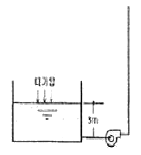
- 12.0m
- 12.3m
- 12.6m
- 12.9m
(정답률: 41%)
76. 수도본관에서 수직높이 5.5m인 곳에 세면기를 수도직결식으로 배관하였을 경우 수도본관에는 최소 얼마의 압력이 필요한가? (단, 본관에서 세면기까지의 마찰손실 압력은 0.35kg/cm2이다.)
- 0.65kg/cm2
- 0.85kg/cm2
- 0.9kg/cm2
- 1.2kg/cm2
(정답률: 19%)
77. 배수트랩에서 봉수깊이와 관련된 설명 중 틀린 것은?
- 봉수깊이 50~100mm로 하는 것이 보통이다.
- 봉수깉이를 너무 깊게 하면 유수의 저항이 감소된다.
- 봉수깊이를 너무 깊게 하면 통수능력이 감소된다.
- 봉수깊이가 너무 낮으면 봉수를 손실하기 쉽다.
(정답률: 53%)
78. 간선 설계시 전선이 굵기를 결정하는 요소와 가장 관계가 먼 것은?
- 전선의 허용 전류
- 전선의 허용 전압 강하
- 전선의 기계적인 강도
- 전선관의 굵기
(정답률: 50%)
79. 압축식 냉동기의 주요 구성요소가 아닌 것은?
- 재생기
- 압축기
- 증발기
- 응축기
(정답률: 64%)
80. 이동 보도에 대한 설명 중 옳지 않은 것은?
- 이동 속도는 30~50[m/min]이다.
- 수평으로부터 10°이내의 경사로 되어 있다.
- 주로 공항이나 박람회방 등에 사용된다.
- 승객을 수직으로 수송하는 방식이다.
(정답률: 64%)
5과목: 건축법규
81. 각각의 지역에서 조례에서는 건축이 허용되지 않는 것은?
- 제1종일반주거지역-안마시술소
- 일반상업지역-기숙사
- 일반공업지역-분뇨 및 쓰레기처리시설
- 자연녹지지역-아파트형공장
(정답률: 41%)
82. 다음 중 부설주차장을 설치하지 아니할 수 있는 건축물은?
- 교회
- 수녀원
- 교육원
- 기도원
(정답률: 67%)
83. 다음 중 중형기계식 주차장에 주차할 수 있는 자동차의 길이, 너비, 무게 기준으로 옳지 않은 것은?
- 길이 : 5.⑤미터 이하
- 너비 : 1.85미터 이하
- 높이 : 1.55미터 이하
- 무게 : 2200킬로그램 이하
(정답률: 35%)
84. 건축물에 대한 높이 구정 중 처마높이의 산정으로 맞는 것은?
- 용마루 상단
- 깔도리 하단
- 기둥의 상단
- 처마도리 하단
(정답률: 27%)
85. 건설교통부령이 정하는 바에 따라 건축물부터 바깥쪽으로 나가는 출구를 설치하여야 하는 대상 건축물에 속하지 않는 것은?
- 문화 및 집회시설 중 관람장
- 의료시설 중 종합병원
- 연면적이 5천제곱미터인 창고시설
- 업무시설 중 국가 또는 지방자치단체의 청사
(정답률: 24%)
86. 다음 중 기계식 주차장의 사용검사와 정기검사의 유효기간으로 옳은 것은?
- 사용검사 2년, 정기검사 3년
- 사용검사 3년, 정기검사 3년
- 사용검사 3년, 정기검사 2년
- 사용검사 2년, 정기검사 2년
(정답률: 42%)
87. 층수산정에 관한 내용 중 옳지 않은 것은?
- 지하층은 건축물의 층수에 산입하지 아니한다.
- 층의 구분이 명화하지 아니한 건축물은 당해 건축물의 높이 4m마다 하나의 층으로 산정한다.
- 건축물의 부분에 따라 그 층수를 달리하는 경우에는 각 부분에 따라 평균한 층의 수를 층수로 한다.
- 계단탑, 장식탑으로서 그 수평투영면적의 합계가 당해 건축물의 건축면적의 8분의 1 이하인 것은 건축물의 층수에 산입하지 아니한다.
(정답률: 45%)
88. 공사감리자의 업무사항으로 맞지 않지 않은 것은?
- 시공계획 및 공사관리의 적정여부 확인
- 상세 시공도면의 작성ㆍ검토
- 공정표의 검토
- 설계변경의 적정여부의 검토ㆍ확인
(정답률: 62%)
89. 오피스텔의 난방설비를 개별난방방식으로 하는 경우에 대한 설명 중 옳지 않은 것은?
- 기름보일러를 설치하는 경우에는 기름저장소를 보일러실에 설치할 것
- 보일러는 거실외의 곳에 설치하되, 보일러를 설치하는곳과 거실사이의 경계벽은 출입구를 제외하고 내화구조의 벽으로 구획할 것
- 난방구획마가 내화구조로 된 벽ㆍ바닥과 갑종방화문으로 된 출입문으로 구획할 것
- 보일러의 연도는 내화구조로서 공동연도로 설치할 것
(정답률: 58%)
90. 문화재ㆍ전통사찰 등 역사ㆍ문화적으로 보존가치가 큰 시설 및 지역의 보호 및 보존을 위하여 필요한 지구는?
- 역사문화 미관지구
- 생태계 보존지구
- 중요시설물 보존지구
- 문화지원 보존지구
(정답률: 44%)
91. 건폐율 50% 이하, 용적률 70% 이하인 제1종전용주거지역 내의 300m2의 대지에 건축할 수 있는 건축면적과 용적률 산정대상 연면적의 최대한도는?
- 건축면적 150m2, 연면적 210m2
- 건축면적 150m2, 연면적 450m2
- 건축면적 210m2, 연면적 450m2
- 건축면적 210m2, 연면적 360m2
(정답률: 49%)
92. 국토의 계획 및 이용에 관한 법률 상 도시기본계획은 누구의 승인을 받아야 하는가?
- 시장ㆍ군수
- 특별시장ㆍ광역시장
- 건설교통부장관
- 대통령
(정답률: 35%)
93. 부설주차장을 당해 시설물의 내부 또는 그 부지가 아닌 시설물의 부지 인근에 단독 또는 공동으로 설치할 수 있는 기준을 주차대수 몇 대 이하인가?
- 300대 이하
- 400대 이하
- 500대 이하
- 600대 이하
(정답률: 54%)
94. 주거용 건축물 급수관이 지름 산정에 관한 설명 중 옳지 않은 것은?
- 가구 또는 세대수가 1일 때 급수관 지름의 최소기준은 15mm이다.
- 가구 또는 세대수가 7일 때 급수관 지름의 최소기준은 25mm이다.
- 가구 또는 세대수가 18일 때 급수관 지름의 최소기준은 50mm이다.
- 가구 또는 세대의 구분이 분분명한 건축물에 있어서 주거에 쓰이는 바닥면적 85m2 초과 150m2 이하는 3기구로 산정한다.
(정답률: 41%)
95. 대지면적이 1500m2이고 조경면적을 대지면적의 10%로 정해진 지역에 건축물을 신축할 때 옥상에 조경을 150m2 시공했다. 이런 경우 지표면이 조경면적은 최소 얼마만큼 해야 하는가?
- 안해도 됨
- 50m2
- 75m2
- 100m2
(정답률: 50%)
96. 방화벽의 구조에 관한 설명 중 옳지 않은 것은?
- 내화구조로서 홀로 설 수 있는 구조일 것
- 방화벽에 설치하는 출입문의 너비 및 높이는 각각 2.7m 이하로 할 것
- 방화벽의 양쪽 끝과 위쪽 끝을 건축물의 외벽면 및 지분면으로부터 0.5m 이상 튀어나오게 할 것
- 방화벽에 설치하는 출입문에는 갑종방화문을 설치 할 것
(정답률: 38%)
97. 시ㆍ도 도시계획위원회의 구성 및 운영에 관한 설명 중 옳지 않은 것은?
- 위원장은 당해 지방자치단체의 부시장 또는 부지사가 되며, 부위원장은 위원중에서 호선한다.
- 시ㆍ도 도시계획 위원회는 최대27명의 위원으로 구성한다.
- 회의는 재적위원 과반수의 출석으로 개의하고, 출석위원 과방수의 찬성으로 의결한다.
- 위원장은 위원회의 업무를 총괄하며, 위원회를 소집하고 그 의장이 된다.
(정답률: 44%)
98. 다음의 대지와 도로와의 관계에 대한 기준 내용 중 ( )안에 알맞은 것은?
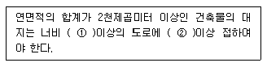
- ① 8m, ② 6m
- ① 8m, ② 4m
- ① 6m, ② 4m
- ① 4m, ② 2m
(정답률: 52%)
99. 건축물에 설치하는 피뢰설비의 기준 내용으로 옳지 않은 것은?
- 피뢰설비는 높이 20m 이상의 건축물에만 설치한다.
- 돌침은 건축물의 맨 윗부분으로부터 25cm 이상 돌출시켜 설치한다.
- 돌침은 「건축물의 구조기준 등에 관한 규칙」의 규정에 의한 풍하중에 견딜 수 있는 구조이어야 한다.
- 피뢰설비의 인하도선을 대신하여 철골조의 철골구조물과 철근콘크리트조의 철근구조체를 사용하는 경우에는 전기적 연속설리 보장되어야 한다.
(정답률: 26%)
100. 건축물의 용도변경 시 건축신고를 하여야 하는 것은?
- 산업등 시설군에서-주거업무시설군으로
- 영업시설군에서-산업등 시설군으로
- 주거업무시설군에서-교육 및 복지시설군으로
- 문화집회시설군에서-산업등 시설군으로
(정답률: 61%)